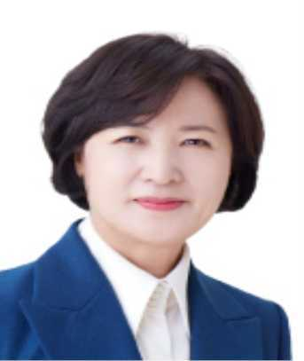
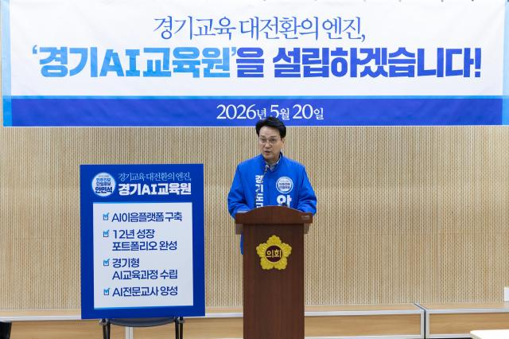

🏛️ 경기도지사 선거
경기도 전체 행정을 이끄는 수장 — 4년 임기 · 역대 최초 여성 대결 구도

- 1호 수도권 30분 출근 대전환GTX-A·B·C는 지연 없이 추진하고 D·E·F 및 GTX 플러스 G·H 노선은 국가철도망 계획 반영을 압박. 서울·인천과 요금·환승을 묶는 ‘수도권 원패스’, 청소년 교통비 지원, 광역버스·철도 연계를 함께 추진해 수지→강남·판교 통근 체감시간을 줄이는 구상.
- 공공주택 14.8만 가구 공급 (5년 임기)공공택지 37만 가구, 매입임대 12.8만 가구, 전세임대 6만 가구, 공공지원 민간임대 2만 가구 이상 등 총 55만 가구 공급 기반을 조성한다는 큰 그림. 역세권 지분적립형 2만호, 환매조건 토지임대부 2만호, 청년·신혼부부 매입임대 8000호처럼 ‘초기 부담 낮춘 주택’이 핵심.
- 반도체 생태계 클러스터 구축용인·평택·이천 생산축에 수원·성남의 설계·AI 역량, 안성·화성의 소재·부품·장비·후공정을 연결하는 전주기 생태계 전략. 전력·용수·인허가 패스트트랙을 도가 직접 조율해 산단 착공·입주 병목을 줄이는 방향.
- 경기공유학교·돌봄 확대도서관·체육관·문화센터·대학 시설을 학교 밖 배움터로 묶어 지역별 공유학교를 확대. 맞벌이 가정이 많은 수지권에는 방과후·저녁돌봄·방학돌봄 공백을 줄이는 생활형 돌봄 인프라로 연결될 수 있음.
- 기후·에너지 정의 실현공공건물 태양광·건물 에너지 효율 개선·산단 RE100 전환을 묶어 기업 탄소비용을 낮추는 전략. 폭염·한파 취약계층 냉난방비 지원과 노후주택 단열 개선을 병행해 ‘기후정책=생활비 절감’으로 설계.
- 1호 AI·반도체 1인당 GRDP 1억원 시대현재 경기도 경제를 AI·반도체 중심으로 재편해 1인당 GRDP 1억원, 총 GRDP 750조원 규모를 목표로 제시. ‘복지 확대도 결국 세수·일자리에서 나온다’는 경제도지사 프레임이 핵심.
- 용인 반도체 국가산단 + 권역별 첨단산단경기남부는 초광역 AI·반도체 클러스터, 서부는 AI 스마트제조, 중부는 스마트 첨단 자족도시, 북부는 미래 신산업·평화경제 거점, 동부는 문화·레저·휴양밸리로 5대 권역별 성장축을 제시.
- 반도체 용수 보상·규제 타파 (여주 이포보)용인·평택 반도체 산단의 핵심 병목인 용수 확보를 위해 여주 이포보 등 공급지역의 희생을 보상 패키지와 연결. 물 공급 지역에는 규제 완화, SOC·세수 배분, 주민 보상책을 동시에 요구하는 방식.
- 서울 30분 '지하철 5철' 구축‘지하철 5철’은 하남·광주·성남 등 서울 접경권 광역철도 연장 묶음 공약으로, 서울 30분 생활권 확대가 목표. 수지구와 직접 연결되는 노선은 공보물에서 추가 확인이 필요하나, 광역철도 예산 확보 능력을 평가할 포인트.
- 중첩규제 쇄신·경제 선거 기조수도권 규제·상수원 규제·그린벨트가 겹친 지역은 투자 유치가 막힌다는 문제의식. 개발이익 일부를 지역 인프라와 환경 보전에 재투자하는 조건부 규제 완화 모델을 강조.
- 1호 전세대란 해법 · 거주 이전 자유 회복전세시장 불확실성을 줄이고 임차인의 이동권을 회복하는 주거 안정 공약을 1순위로 제시. 임대차 시장 경직을 풀어 실수요자가 원하는 지역으로 옮길 수 있게 하는 ‘부동산 정상화’ 프레임이 핵심.
- 반도체 익스프레스 · 경기남부 반도체 벨트 수호화성·평택·용인으로 이어지는 반도체 축을 강제로 분산하지 않고 집중 지원하겠다는 노선. 산단 안팎에 학교·병원·문화·쇼핑 인프라를 함께 짓는 실리콘밸리식 자족형 클러스터를 제안.
- 배차·대기환경 개선 중심 교통 공약새 노선 발표보다 시민이 매일 겪는 버스 배차 간격, 환승 대기, 정류장 대기환경 개선을 강조. 광역버스 증차·정류장 편의·환승 체계 개선처럼 ‘바로 체감되는 교통’에 초점.
- 경기북부 4대 중첩규제 → 국방 R&D 벨트군사보호구역·접경지역·수도권정비계획·환경규제로 묶인 북부 6개 시군을 국방 R&D·드론·방산 실증 거점으로 전환하겠다는 공약. 희생 보상형 개발이 아니라 젊은 산업 일자리 창출을 내세움.
- 양당 카르텔 견제 · 토론 참여 압박거대 양당 후보가 토론을 회피한다고 비판하며 공신력 있는 여론조사·토론을 요구. 당선 가능성보다 ‘견제와 정책 경쟁 촉진’ 역할을 강조하는 제3지대 전략.
현재 추미애 후보가 약 20%p 가까운 격차로 앞서 있습니다. 양향자 후보는 '반도체 전문가' 이미지와 경제 이슈로 격차 축소를 노리고 있습니다. 개혁신당 조응천 후보는 6.6%로 제3의 선택지이며, 전세·반도체·생활교통 의제를 통해 양당 구도 균열을 노리고 있습니다. 수지구 포함 경기 남부는 반도체·교통이 핵심 생활 이슈이므로 세 후보의 철도·교통·주거 공약을 공보물에서 꼼꼼히 확인해 보세요.
🎓 경기도교육감 선거
경기도 학교 정책 책임자 — 정당 공천 없이 단독 투표 · 보수 vs 진보 구도

- 교권 회복 · 학교지원 중심 교육행정악성 민원은 교육청·전문기관이 1차 대응하고, 학교는 수업·생활지도 중심으로 재편. 교권보호 전담팀, 법률지원, 담임 행정업무 감축을 묶어 ‘교사가 학부모 민원에 혼자 노출되지 않는 구조’를 만들겠다는 방향.
- 경기교육격차 지수 도입학력·돌봄·통학·문화예술·진로체험 기회를 지표화해 31개 시군·학교별 격차를 지도처럼 공개. 예산을 균등 배분이 아니라 격차가 큰 학교·지역에 더 주는 ‘가중 배분’으로 바꾸겠다는 의미.
- 교육지원청 6곳 신설 (25→31개)현재 25개 교육지원청을 31개 시군 체계에 맞춰 6곳 추가 신설. 교육장 공모제, 지역별 예산·인사 권한 확대를 통해 신도시 과밀·구도심 격차 같은 현안을 현장 가까이에서 처리하겠다는 구상.
- 안심에듀버스 확대 (통학권 보장)무상 통학버스·워킹스쿨버스·실시간 위치 확인 기능을 결합한 통학 안전 패키지. 수지권처럼 통학로 혼잡·학원가 차량 문제가 있는 지역은 학교 주변 보행 안전 개선과 연결해 볼 수 있음.
- 반려 스포츠·악기·독서 'SPR' 도입‘1인 1운동·1악기·매일 독서’에 가까운 모델로, 입시 과목 밖의 기본 체력·예술·문해력을 학교가 책임지겠다는 방향. 사교육이 아닌 공교육 시간표 안에서 경험 격차를 줄이는 것이 목표.
- 지자체 예산 5% 교육 투자 유도경기 31개 시군과 협약을 맺어 자치단체 예산의 5%를 교육분야에 투자하도록 유도, 재원 폭 확대.
- AI 학습 플랫폼 '하이러닝' 완성하이러닝을 공공 AI 학습 플랫폼으로 고도화해 학생별 취약 단원·문항·학습속도를 분석. 민간 에듀테크에 학생 데이터가 과도하게 넘어가지 않도록 ‘공공 플랫폼·데이터 주권·보안’을 함께 내세움.
- AI 서·논술형 평가 → 대입제도 개혁손글씨 답안을 OCR로 인식하고 AI가 1차 채점을 보조하는 서·논술 평가 모델을 확대. 상대평가·객관식 중심 대입을 절대평가·과정중심 평가로 바꾸는 실험을 경기도에서 먼저 완성하겠다는 공약.
- 초등 돌봄 대기 해소초등 돌봄 대기자 ‘제로’에 가까운 체계를 목표로 학교 안 돌봄교실, 지역 거점 돌봄, 방학 돌봄을 통합 운영. 신도시 맞벌이 가구가 많은 수지구에 직접 체감도가 큰 공약.
- 경기공유학교·온라인학교 학습 안전망경기공유학교는 지역 시설·전문가를 수업 자원으로 연결하고, 온라인학교는 질병·부적응·대안교육 학생의 학습권을 보완. 학교 하나가 모든 과목·활동을 떠안는 구조를 분산시키는 전략.
- 사각지대 해소 중심 교육복지기초학력 진단, 마음건강, 특수교육 보조인력, 다문화 언어지원 등 취약 학생에게 필요한 서비스를 조기 연결. ‘평균 학생’ 중심 정책이 아니라 학생 유형별 맞춤 지원을 강화하는 쪽.
| 항목 | 안민석 (진보) | 임태희 (보수·현직) |
|---|---|---|
| 교육 방향 | 교육대전환 · 교권보호 강조 | AI·미래교육 완성 강조 |
| 학교 행정 | 교육지원청 확대, 교장공모제 | 현 시스템 개선·고도화 |
| 입시 정책 | 교육격차 해소 중심 | 대입 서·논술형 AI 평가 개혁 주도 |
| 경력 특징 | 정치적 감각·입법 경험 | 현직 재선·행정 연속성 |
진보 4인방 단일화 이후 안민석 후보가 13~14%p 격차로 앞서는 상황입니다. 수지구는 학령 인구가 많은 신도시 지역으로 교육 이슈 관심도가 높습니다. AI 교육 인프라, 돌봄, 교권 보호 중 어떤 가치를 우선시하는지에 따라 선택이 달라집니다.
🏙️ 용인특례시장 선거
110만 용인시를 이끌 시장 — 반도체·GTX·도시개발 핵심 결정권자
- 반도체 배후 신도시 규모 2배 확대 (330만㎡+)현재 약 228.8만㎡(69만평) 배후 신도시 계획에 약 330.6만㎡(100만평)를 추가해 주거·상업·교육·의료 기능을 갖춘 자족도시로 키우겠다는 구상. ‘일자리만 있고 살 곳은 없는 산단’을 막겠다는 메시지.
- 경제자유구역 지정으로 외국기업·국제학교 유치경제자유구역 지정으로 외국계 반도체·AI 기업의 연구소, 외국인 임직원 주거·교육 인프라, 국제학교 유치를 패키지로 추진. 지정 자체는 중앙정부·경기도 협의가 필요해 실행력과 정치력이 관건.
- 5000억 벤처 투자펀드 (소부장·미래산업)반도체 팹 자동화로 직접 고용이 제한될 수 있다는 점을 보완하기 위해 소부장·설계·검사·후공정·AI 스타트업을 키우는 펀드. 시 재정, 민간 LP, 정책금융을 섞어 조성할 가능성이 큼.
- YTX (용인분당급행철도) 신설 · JTX 조기추진YTX는 용인·분당·판교 축을 급행으로 묶어 수지·죽전의 판교·강남 접근성을 개선하는 지역형 철도 공약. JTX·경기남부광역철도와 함께 국가철도망 반영 여부가 실제 추진의 1차 관문.
- 용인에너지주식회사 설립 (태양광 시민배당)시 소유 유휴부지·공공건물 지붕에 태양광을 설치하고 시민 투자·배당형 모델을 도입. 발전 수익 일부는 에너지 취약계층 지원과 공공요금 부담 완화에 쓰겠다는 설계.
- 민원 소통 앱 '용인똑똑' 개발도로파손·불법주정차·공원 민원 등을 실시간 신고·처리하는 스마트 민원 앱 개발.
- '용인 르네상스 시즌2' — 공약 이행률 95% 강조민선 8기 공약 212건 중 완료·이행 후 계속추진을 합쳐 95% 수준의 이행률을 내세움. 재선 공약은 새 사업보다 기존 반도체 산단·교통망·플랫폼시티를 끊기지 않게 완성하는 ‘연속성’에 초점.
- 반도체고속도로 · 용인-성남·충주고속도로반도체고속도로, 용인-성남·용인-충주·의왕-용인-광주 고속도로 등 동서남북 도로망을 묶어 산단 물류와 시민 통행을 분산. 목표는 시내 어디서든 10~20분 내 고속도로 접근권 확보.
- 경강선 연장 · 3호선 연장 · 신분당선 지선경강선 연장, 서울 3호선 연장·대안노선, 신분당선 지선·대안노선을 동시에 밀어 수지·기흥·처인의 철도 불균형을 줄이는 전략. 단기 착공보다는 국가계획 반영·예타 통과·재원분담 협상이 핵심.
- 반도체 특화 대도시 완성도 제고용인 국가산단·원삼 SK클러스터·기흥 삼성 거점을 하나의 ‘반도체 특화 대도시’로 연결. 협력사 입주, 인력 양성, 병원·학교·상업시설까지 묶어 인구 150만 광역도시 기반을 만들겠다는 그림.
- AI 반려동물 플랫폼 등 스마트시티 고도화반려동물 등록·실종 신고·보호소 연계를 AI 플랫폼으로 묶는 생활밀착형 디지털 행정. 교통·복지·민원 분야에도 AI 기반 상담·신고·예약 시스템을 확장하는 스마트시티 노선.
- 용인공영버스터미널 재건축용인공영버스터미널 재건축을 통해 시외버스·광역버스·시내버스 환승 동선을 개선. 처인 중심 사업이지만 전체 용인의 광역 이동망을 보완하는 교통 허브 역할을 기대.
| 항목 | 현근택 (민주) | 이상일 (국힘·현직) |
|---|---|---|
| 반도체 | 신도시 확대, 경제자유구역 신규 지정 | 현재 추진 중인 국가산단 완성·가속화 |
| 교통 | YTX 신설, GTX 병행 추진 | 경강선·신분당선·고속도로망 완성 |
| 강점 | 여당(이재명 정부) 배경·예산 협력 | 4년 재임 경험·구체적 이행 기록 |
| 수지구 | 39.3% (수지 지역) | 48.1% (수지 지역 우세) |
전체 용인 기준 오차범위 내 접전이지만, 수지구 한정으로는 이상일 현직 시장이 앞서고 있습니다. 현 이재명 정부와의 협력 가능성(여당 프리미엄)과 기존 공약 이행률(현직 프리미엄) 중 어느 쪽을 더 중시하느냐가 핵심입니다.
🏢 경기도의원 선거 — 제8선거구 (수지권)
경기도의회를 구성하는 광역의원 — 지역구 1장 + 비례 1장
- 수지구 교통 인프라 확충 (신분당선 연장 등)신분당선 연장·광역버스 증차·환승정류장 개선을 도 예산·도시철도 계획과 연계해 추진. 수지구 출퇴근 병목인 죽전·동천·상현 축의 버스 배차간격 단축과 정류장 혼잡 완화가 핵심.
- 신도시 과밀 학교 해소 및 교육환경 개선동천·상현·성복권 과밀학급, 통학구역 재조정, 급식실·체육관·돌봄교실 증설을 도교육청 예산 심의에서 우선순위화. 학교 신설이 어려운 지역은 모듈러 교실·시설 증축·통학 안전 개선을 병행.
- 민주당 원팀 공약 연계 추진민주당 도지사·시장 후보의 경기남부광역철도, 공공돌봄, 주거정책과 지역 도의원 공약을 묶어 예산·조례·도정질문으로 압박. 다만 중앙·도·시 권한이 섞인 공약은 역할 분담이 명확해야 함.
- 4년간 수지구 도의회 활동 연속성 강조현역 도의원으로 축적한 도청·도교육청 예산 라인과 상임위 경험을 활용해 계속사업의 중단을 막겠다는 메시지. 신규 대형공약보다 이미 추진 중인 교통·학교·복지 예산을 마무리하는 데 강점.
- 광역교통·생활 인프라 의정 활동 실적GTX-A 연계 교통, 용서고속도로·수지 주요 간선도로 정체, 광역버스 증차 등 ‘도 단위 조정’이 필요한 의제를 전면에 둠. 도로 확장·방음벽·보행안전 예산처럼 생활 SOC 확보 능력을 재선 명분으로 제시.
- 수지권 현안 해결 경험 강점국힘 현직 시장과 같은 정당 네트워크를 활용해 도비·시비 매칭사업을 빠르게 조율하겠다는 전략. 수지구 공원·하천·체육시설·노후도로 정비처럼 소규모 예산이 잦은 사업에서 실무형 장점을 주장.
국힘 강웅철 현역 도의원과 민주당 이건한 전 시의원의 대결입니다. 전국 판세는 민주당에 유리하지만, 수지구는 이상일 용인시장 지지층이 두텁습니다. 시·도지사 선거 코트테일 효과가 크게 작용할 것으로 예상됩니다. 두 후보의 수지 지역 구체적 공약은 선거 공보물에서 확인하세요.
🏘️ 용인시의원 선거 — 수지구 차/카 선거구
가장 가까운 생활 정치 — 지역구 1장 + 비례 1장
- 김병민 (現 시의원, 1975년)① 옛 경찰대CC 부지(28.6만㎡) 주택+생활SOC(도서관·체육시설) 복합 개발 ② 광역교통개선대책·신규 도로망 확충 ③ 과밀 학교 추가 용지 확보
- 신현녀 (現 시의원·경제환경위원장, 1966년)① 소상공인·전통시장 지원 조례 강화로 지역 경제 활성화 ② 생활 쓰레기·환경 민원 신속 처리 체계 ③ 여성·아동 안전 인프라 확대 (의정 우수의원 수상)
- 김봉성 · 이주연 · 박우진 外
- 기주옥 (現 비례의원→지역구 도전, 1987년)① 공공체육시설 확충·관리 개선 (조례 발의 이력) ② 디지털 취약계층 역량 강화 지원 조례 ③ 청년 주거·취업 지원 강화
- 김영선 (1963년) · 이제성 (1986년)
- 이상욱 (現 시의원, 1985년)① 용인시 자치법규 정비로 시민 불편 규정 전면 개선 ② 죽전·동천 일대 보행 환경·안전시설 개선 ③ 청년·신혼부부 생활 지원 정책 확대
- 황재욱 (現 시의원 재선 이상, 1956년)① 노인 복지·경로당 인프라 확충 ② 지역 생활도로 정비 및 주차환경 개선 ③ 소통형 의정활동·지역 현안 즉각 처리
- 김민주 · 정경이 · 최재만 外
- 박은선 (現 시의원·윤리특별위원장, 1975년)① 아동보호구역 조례 통과 실적 — 어린이 등하교 안전 강화 지속 ② 반도체 인재 양성·교육 지원 조례 (국힘 정책공모 최우수상 2연패) ③ 온실가스감축인지 예산제 도입
시의원 선거는 가장 생활과 밀접한 선거입니다. 공보물이 각 후보의 거주 동네 현안(도로, 공원, 학교, 복지 시설)에 대한 구체 공약을 담고 있으니 반드시 읽어보세요. 확정 후보 명단과 번호는 info.nec.go.kr에서 주소 입력 후 조회 가능합니다.